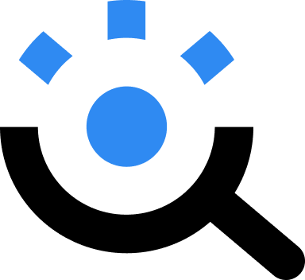
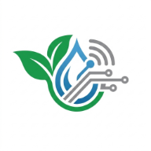
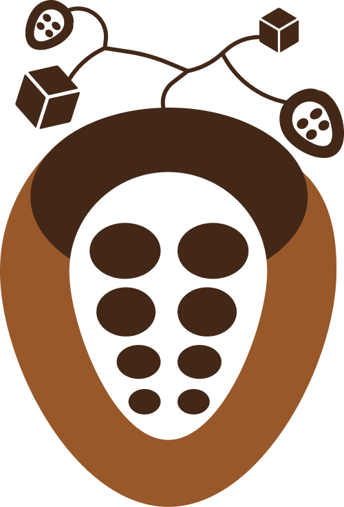

CYBERSÉCURITÉ · IA⌁
01 · 2026
SafeDM
Solution intelligente qui aide à identifier les messages potentiellement dangereux et les tentatives d’arnaque grâce à l’analyse automatique du contenu.
Étudiante en informatique ·
Bienvenue, je suis
Je transforme ma curiosité en projets qui ont du sens, entre technologie, cybersécurité, santé, innovation et impact.
Apprendre · Créer · Partager · Impacter

À PROPOS DE MOI
Je suis Sika Eva ADJEI, étudiante en informatique à l’IAI-Togo et passionnée par les nouvelles technologies, la cybersécurité et tout ce qui est pratique.
Curieuse, dynamique, rigoureuse et déterminée, j’aime apprendre par la pratique, relever des défis et collaborer sur des projets qui cherchent des réponses concrètes à des problèmes réels.

CE QUE JE CONSTRUIS
Mes projets sont aussi des terrains d’apprentissage : comprendre un besoin, imaginer une réponse et la rendre concrète.

CYBERSÉCURITÉ · IA01 · 2026
Solution intelligente qui aide à identifier les messages potentiellement dangereux et les tentatives d’arnaque grâce à l’analyse automatique du contenu.

AGRICULTURE · TECHNOLOGIE02 · 2026
Une solution technologique pensée pour l’irrigation et la gestion de l’eau dans l’agriculture, avec une approche adaptée au terrain.

AGRICULTURE · TRAÇABILITÉ03 · 2026
Projet autour de la traçabilité des cultures, développé dans le cadre du Miabé Hackathon.
MON PARCOURS
IAI-Togo · Lomé, Togo
Développement, réseaux, bases de l’informatique et projets pratiques.NDE · Lomé, Togo
Une étape qui ouvre le chemin vers l’informatique et les projets numériques.J’avance en expérimentant, en demandant, en corrigeant et en partageant ce que j’apprends.


MES ENGAGEMENTS
Je crois que la Tech grandit quand elle se partage. Mes engagements m’apprennent à communiquer, créer, organiser et travailler avec d’autres personnes.
MES COMPÉTENCES
Je développe progressivement un profil à la rencontre du développement, des réseaux, de la cybersécurité et de la communication.
La créativité et la communication font partie de ma façon d’apprendre et de transmettre.
MA VISION
À long terme, je souhaite explorer la bio-informatique, les infrastructures réseaux et la protection des données médicales, avec l’ambition de contribuer à des solutions numériques sécurisées et utiles en Afrique.
RESTONS CONNECTÉS
Projet, collaboration, opportunité ou simplement envie d’échanger autour de la Tech : ma boîte mail est ouverte.
sikave2007@gmail.com ↗